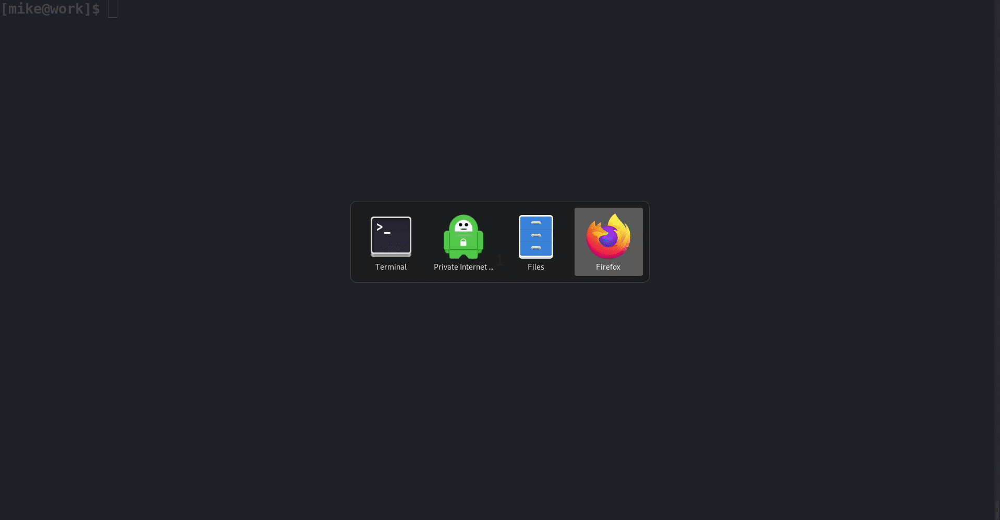

Home
Bash-my-AWS is a simple but extremely powerful set of CLI commands for managing resources on Amazon Web Services.
They harness the power of Amazon's AWSCLI, while abstracting away verbosity.
The project implements some innovative patterns but (arguably) remains simple, beautiful and readable.

Introduction¶
- Short, Memorable Commands
- Shell Command Completion (including AWS resources)
- Unix Pipeline Friendly (instead of JSON)
- Convenient Shortcuts
Short, Memorable Commands¶
There are two main types of commands.
1. Resource Listing Commands
These generally consist of the pluralised form of the resource name.
$ buckets example-assets 2019-12-08 02:35:44.758551 example-logs 2019-12-08 02:35:52.669771 example-backups 2019-12-08 02:35:56.579434
$ stacks nagios CREATE_COMPLETE 2011-05-23T15:47:44Z NEVER_UPDATED NOT_NESTED postgres01 CREATE_COMPLETE 2011-05-23T15:47:44Z NEVER_UPDATED NOT_NESTED postgres02 CREATE_COMPLETE 2011-05-23T15:47:44Z NEVER_UPDATED NOT_NESTED prometheus CREATE_COMPLETE 2011-05-23T15:47:44Z NEVER_UPDATED NOT_NESTED
$ keypairs alice 8f:85:9a:1e:6c:76:29:34:37:45:de:7f:8d:f9:70:eb bob 56:73:29:c2:ad:7b:6f:b6:f2:f3:b4:de:e4:2b:12:d4 carol 29:4e:1c:cb:ba:d4:85:0e:4f:b6:34:4c:d4:79:32:00
2. Resource detail/action commands
These generally consist of a resource name and action separated by a hyphen. This makes discovering them via shell completion simple.
Some retrieve information about resources while others make changes to them.
$ keypair-delete alice bob
You are about to delete the following EC2 SSH KeyPairs:
alice
bob
Are you sure you want to continue? y
See the Command Reference for a full list of commands.
Shell Command Completion¶
In the example above, shell autocompletion retrieved the existing EC2 Keypair
names (alice, bob) from AWS. This helps avoid the need to rely on human
memory or terminal copypasta.
Unix Pipeline Friendly¶
The commands themselves are line oriented and work nicely in unix pipelines
with other unix commands (e.g. grep, awk, etc).
$ stacks | grep postgres postgres01 CREATE_COMPLETE 2011-05-23T15:47:44Z NEVER_UPDATED NOT_NESTED postgres02 CREATE_COMPLETE 2011-05-23T15:47:44Z NEVER_UPDATED NOT_NESTED
They also work incredibly well with each other due to the way they treat input from STDIN. The first token from each line of STDIN is taken to be a resource identifiers (and the rest is discarded).
$ stacks | grep postgres | stack-delete You are about to delete the following stacks: postgres01 postgres02 Are you sure you want to continue? y
Some users have compared this User Experience to functionality in Windows Powershell.
Convenient Shortcuts¶
Bash-my-AWS is insanely simple to pick up and start using but contains a lot of convenient shortcuts you can make use of.
Example: resource listing commands accept a filter argument, removing the need
for | grep.
In the following example someone has given a CloudFormation stack a really long name:
$ stacks nagios CREATE_COMPLETE 2011-05-23T15:47:44Z NEVER_UPDATED NOT_NESTED postgres01 DELETE_COMPLETE 2011-05-23T15:47:44Z NEVER_UPDATED NOT_NESTED postgres02 DELETE_COMPLETE 2011-05-23T15:47:44Z NEVER_UPDATED NOT_NESTED prometheus CREATE_COMPLETE 2011-05-23T15:47:44Z NEVER_UPDATED NOT_NESTED stack-with-a-annoyingly-long-name CREATE_COMPLETE 2011-05-23T15:47:44Z NEVER_UPDATED NOT_NESTED
This affects the output when we look at our Postgres stacks:
$ stacks | grep postgres postgres01 DELETE_COMPLETE 2011-05-23T15:47:44Z NEVER_UPDATED NOT_NESTED postgres02 DELETE_COMPLETE 2011-05-23T15:47:44Z NEVER_UPDATED NOT_NESTED
The resource listing command can filter output before applying column.
$ stacks postgres postgres01 DELETE_COMPLETE 2011-05-23T15:47:44Z NEVER_UPDATED NOT_NESTED postgres02 DELETE_COMPLETE 2011-05-23T15:47:44Z NEVER_UPDATED NOT_NESTED
Quickstart¶
Prerequisites¶
Installation¶
As shown below, you may simply clone the GitHub repo and source the files required. (You should probably fork it instead to keep your customisations)
$ git clone https://github.com/bash-my-aws/bash-my-aws.git ~/.bash-my-aws
Put the following in your shell's startup file:
export PATH="$PATH:$HOME/.bash-my-aws/bin" source ~/.bash-my-aws/aliases # For ZSH users, uncomment the following two lines: # autoload -U +X compinit && compinit # autoload -U +X bashcompinit && bashcompinit source ~/.bash-my-aws/bash_completion.sh
Why use shell aliases?
Bash-my-AWS began as a collection of bash functions, sourced into your shell.
More recently, the default suggestion has been to load aliases that execute a
small wrapper script that loads the functions and executes the desired function.
After years of zsh users asking for support, one stepped up and identified
a changes that would eliminate any shell compatibility problems without compromising
the functionaility, simplicity and discoverability of the project. Massive thanks
to @ninth-dev for this.
# bash users may source the functions instead of loading the aliases
if [ -d ${HOME}/.bash-my-aws ]; then
for f in ~/.bash-my-aws/lib/*-functions; do source $f; done
fi
Usage¶
Running Commands¶
The default way to run the commands is using the aliases:
$ instances i-e6f097f6ea4457757 ami-123456789012 t3.nano running example-ec2-ap-southeast-2 2019-12-07T08:12:00.000Z ap-southeast-2a None i-b983805b4b254f749 ami-123456789012 t3.nano running postfix-prod 2019-12-07T08:26:30.000Z ap-southeast-2a None i-fed39ebe7204dfd37 ami-123456789012 t3.nano running postfix-prod 2019-12-07T08:26:34.000Z ap-southeast-2a None i-47955eb46d98b4dd8 ami-123456789012 t3.nano running prometheus 2019-12-07T08:27:02.000Z ap-southeast-2a None i-8d25b78d40d17f38a ami-123456789012 t3.nano running plex-server 2019-12-07T08:27:38.000Z ap-southeast-2a None
It's also possible to run them using the bma wrapper.
(This is sometimes required when using a restrictive auth tool.)
$ bma instances i-e6f097f6ea4457757 ami-123456789012 t3.nano running example-ec2-ap-southeast-2 2019-12-07T08:12:00.000Z ap-southeast-2a None i-b983805b4b254f749 ami-123456789012 t3.nano running postfix-prod 2019-12-07T08:26:30.000Z ap-southeast-2a None i-fed39ebe7204dfd37 ami-123456789012 t3.nano running postfix-prod 2019-12-07T08:26:34.000Z ap-southeast-2a None i-47955eb46d98b4dd8 ami-123456789012 t3.nano running prometheus 2019-12-07T08:27:02.000Z ap-southeast-2a None i-8d25b78d40d17f38a ami-123456789012 t3.nano running plex-server 2019-12-07T08:27:38.000Z ap-southeast-2a None
Discovering Commands¶
For each resource type, there is a command to list them:
$ instances i-e6f097f6ea4457757 ami-123456789012 t3.nano running example-ec2-ap-southeast-2 2019-12-07T08:12:00.000Z ap-southeast-2a None i-b983805b4b254f749 ami-123456789012 t3.nano running postfix-prod 2019-12-07T08:26:30.000Z ap-southeast-2a None i-fed39ebe7204dfd37 ami-123456789012 t3.nano running postfix-prod 2019-12-07T08:26:34.000Z ap-southeast-2a None i-47955eb46d98b4dd8 ami-123456789012 t3.nano running prometheus 2019-12-07T08:27:02.000Z ap-southeast-2a None i-8d25b78d40d17f38a ami-123456789012 t3.nano running plex-server 2019-12-07T08:27:38.000Z ap-southeast-2a None
and a number of command to act on these resources:
$ instance-[TAB][TAB] instance-asg instance-ssh-details instance-termination-protection instance-az instance-stack instance-termination-protection-disable instance-console instance-start instance-termination-protection-enable instance-dns instance-state instance-type instance-iam-profile instance-stop instance-userdata instance-ip instance-tags instance-volumes instance-ssh instance-terminate instance-vpc
Whether you're new to the tools or just have a bad memory, bash completion makes discovering these commands simple.
See the Command Reference for a full list with usage examples
Piping Between Commands¶
This is where the magic happens!
The first token on each line is almost always a resource identifier. When you pipe output between the commands they just take the first token from each line.
$ instances | grep postfix | instance-ip i-b983805b4b254f749 10.190.1.70 54.214.71.51 i-fed39ebe7204dfd37 10.135.204.82 54.214.26.190
Note
Most commands that list resources (stacks, instances , etc) accept
filter term as first arg. As well as reducing keystrokes, it can also
improve output as columnisation is done after filtering.
$ instances postfix | instance-ip i-b983805b4b254f749 10.190.1.70 54.214.71.51 i-fed39ebe7204dfd37 10.135.204.82 54.214.26.190
Inspecting Commands¶
For those interested in how it works:
- Each command is a bash function.
- Most are very simple and wrap an AWSCLI command.
For a quick look at how a command works, you can use bma type:
$ bma type instances instances is a function instances () { local instance_ids=$(__bma_read_inputs); local filters=$(__bma_read_filters $@); aws ec2 describe-instances $([[ -n ${instance_ids} ]] && echo --instance-ids ${instance_ids}) --query " Reservations[].Instances[][ InstanceId, ImageId, InstanceType, State.Name, [Tags[?Key=='Name'].Value][0][0], LaunchTime, Placement.AvailabilityZone, VpcId ]" --output text | grep -E -- "$filters" | LC_ALL=C sort -b -k 6 | column -s' ' -t }
A prettier version can be found in the source code:
# ~/.bash-my-aws/lib/instance-functions instances() { local instance_ids=$(__bma_read_inputs) local filters=$(__bma_read_filters $@) aws ec2 describe-instances \ $([[ -n ${instance_ids} ]] && echo --instance-ids ${instance_ids}) \ --query " Reservations[].Instances[][ InstanceId, ImageId, InstanceType, State.Name, [Tags[?Key=='Name'].Value][0][0], LaunchTime, Placement.AvailabilityZone, VpcId ]" \ --output text | grep -E -- "$filters" | LC_ALL=C sort -b -k 6 | column -s$'\t' -t }
For more info on AWSCLI query syntax, check out http://jmespath.org/tutorial.html